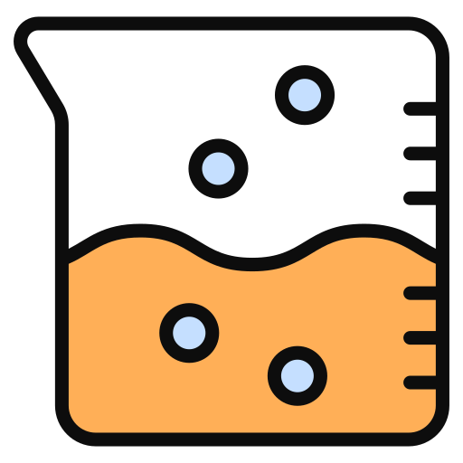

Cara Pembuatan Koloid

Dilakukan menggunakan penggilingan /
penggerusan partikel suspensi sampai
diperoleh tingkat kehalusan tertentu,
yang kemudian diaduk dengan medium
pendispersi.
Contoh: Karbon dihaluskan dengan penggiling koloid agar menghasilkan tinta
Contoh: Karbon dihaluskan dengan penggiling koloid agar menghasilkan tinta
Dilakukan menggunakan mesin Homogenisasi
sampai berukuran koloid. Jika partikel
sudah sesuai ukuran koloid, selanjutnya
akan didispersikan ke dalam medium
pendispersi.
Contoh: Emulsi obat di pabrik obat yang menggunakan mesin Homogenisasi
Contoh: Emulsi obat di pabrik obat yang menggunakan mesin Homogenisasi
Dengan memecah partikel-partikel besar /
endapan menjadi koloid dan tambahan ion
sejenis, sehingga partikel endapan
mengalami pemecahan oleh zat kimia.
Contoh: Agar-agar dipeptisasi oleh air
Contoh: Agar-agar dipeptisasi oleh air
Dengan mencelupkan 2 kawat logam yang
dialiri arus listrik ke dalam air, logam
tersebut akan mengalami kondensasi
sehingga menjadi partikel koloid.
Digunakan untuk membuat sol-sol logam
Digunakan untuk membuat sol-sol logam
Dilakukan dengan cara mencampurkan suatu
zat dengan air. Umumnya digunakan untuk
membuat koloid-koloid basa dari suatu
garam yang dihidrolisis.
Contoh: Pembuatan sol Fe(OH)3 dari hidrolisis FeCI3
Contoh: Pembuatan sol Fe(OH)3 dari hidrolisis FeCI3
Umumnya dilakukan untuk membuat koloid
dari zat-zat yang sukar larut (berbentuk
endapan) yang dihasilkan pada reaksi
kimia.
Contoh: Pembuatan sol As2S3 dengan mengalirkan gas H2S ke dalam larutan As2O3
Contoh: Pembuatan sol As2S3 dengan mengalirkan gas H2S ke dalam larutan As2O3
Reaksi yang disertai perubahan bilangan
oksidasi, dan hasil koloid yang terjadi
merupakan hasil oksidasi atau reduksi.
Contoh: Pembuatan sol belerang dari reaksi antara Hidrogen Sulfida (H2S) dengan belerang dioksida (SO2)
Contoh: Pembuatan sol belerang dari reaksi antara Hidrogen Sulfida (H2S) dengan belerang dioksida (SO2)
Dilakukan untuk membuat sol belerang
dimana belerang dilarutkan ke dalam
etanol sampai jenuh, lalu larutan
tersebut dimasukkan kedalam air sedikit
demi sedikit hingga menggumpal, dan
dipisahkan dengan dialisis.
Contoh lainnya adalah pembuatan gel kalsium asetat yang ditambahkan alkohol 96%
Contoh lainnya adalah pembuatan gel kalsium asetat yang ditambahkan alkohol 96%